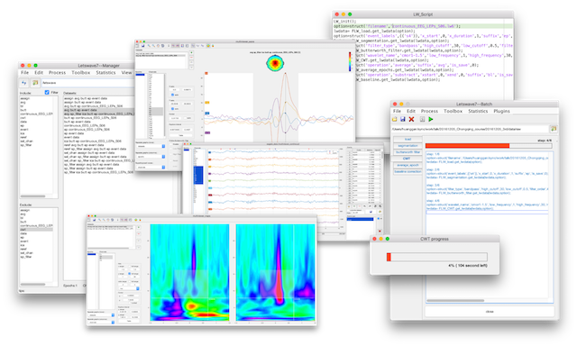

Welcome to Letswave
Letswave provides multiple functions of the neurophysiological signals processing. It supports data import from mainstream EEG amplifier, provides multiple function for data preprocessing and time and frequency domain signal analysis. The user-friendly GUI makes it easy for file management, batch operation, statistical analysis, and figure generating for publication. The interactive GUI design makes the data observation and comparison simpler and more intuitive in every step of the signal processing. The script autogenerating feature greatly reduced the gap between the GUI-based users and script-based users. As compared to other signal processing toolboxes, Letswave is an intuitive and streamlined tool to process and visualize EEG data, with a shallow learning curve.

Download and setup
Download
You can download the package directly from Github or the mirror site.
The old version Letswave 6 can be downloaded here.
Setup
Unzip the file you download into the folder of your choice. Add the folder into the the path of Matlab. Input “letswave7” in the commond windows of Matlab to check whether the install is successful or not.
Click here for more information about the download and setup.
Authors and Contributors
The project is managed by André Mouraux (Institute of Neuroscience, Université catholique de Louvain, Belgium), in collaboration with Gan Huang and Bruno Rossion (Institute of Neuroscience, Université catholique de Louvain), Li Hu (Southwest University, China) and Giandomenico Iannetti (University College London, UK). It borrows a number of functions from the Fieldtrip toolbox (F.C. Donders Institute), and EEGLAB (Swartz Center for Computational Neuroscience).
Feedback
The project is now hosted on the NOCIONS GITHUB. Please use the GITHUB platform to report issues and submit requests.